A step-by-step guide to the work most MERIT users do: loading blood test results, clearing held records, keeping laboratory and provider identifiers current, entering people and results by hand, following up cases, and sending the federal extracts.
Screens shown are from the MERIT demonstration site, with made-up people. What you see depends on your role and profile: a button that is missing for you is a permission you do not have (see the companion guide Who sees what, and your profiles).
Companion guides: MERIT User Guide - Importing NPI and CLIA Records; MERIT User Guide - Access and Profiles. Interactive diagrams: docs/daily-intake_workflow.html, docs/npi-clia-import_workflow.html, docs/cbls-extract_lifecycle.html.
| How often | Task | Where | Usually done by |
|---|---|---|---|
| Every day | Upload each laboratory file as it arrives; check the batch card | Intake | Intake clerk, supervisor |
| Clear held records, urgent (high results) first | Held records | Intake clerk, supervisor | |
| Decide possible person matches | Match review | Intake clerk, supervisor | |
| Enter fax and paper reports | Search, then the person page | Intake clerk, case manager | |
| Work your tasks: confirmatory tests, address review, contacts, notifications | Work queues, Cases | Case manager, investigator | |
| Every week | Look for overdue tasks and unassigned cases; reassign | Home, Work queues, Cases | Supervisor |
| Review clusters under review and new cluster alerts | Clusters, Map | Supervisor, epidemiologist | |
| Add new laboratories, facilities and providers; fix "unknown sender" holds | Reporters | Intake clerk, supervisor | |
| Schedule and close investigations | Investigations | Investigator | |
| Every month | Check reporter timeliness and completeness; case timeliness | Reports | Supervisor, epidemiologist |
| Every quarter | Generate, review, send and mark submitted the CDC CBLS file for the quarter that ended | Extracts | Supervisor (epidemiologists can generate) |
| Review testing counts and elevated counts; export for partners | Reports | Epidemiologist | |
| Every year | Generate and send the NIOSH ABLES file; review thresholds and settings | Extracts, Configuration | Supervisor, administrator |
| As needed | Add users and give access; add a county, program or other tenant | Users, Tenants | Administrator |
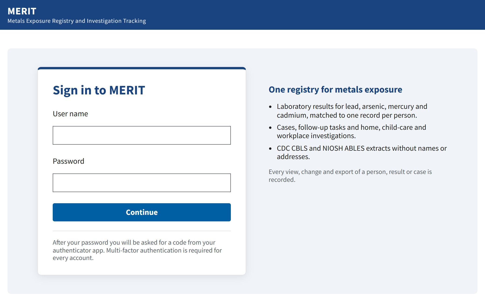
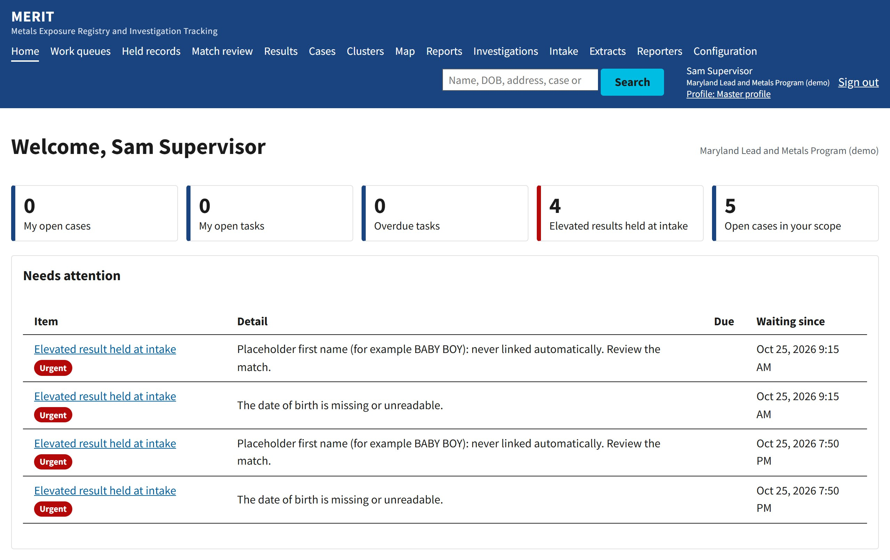
Who: anyone with the Upload intake files permission (intake clerks and supervisors).
Laboratories send results as files (CSV, pipe- or tab-delimited). Each laboratory has an intake profile that tells MERIT how to read its file. MERIT stores the file unchanged, then checks every row in the background, usually within a few minutes.
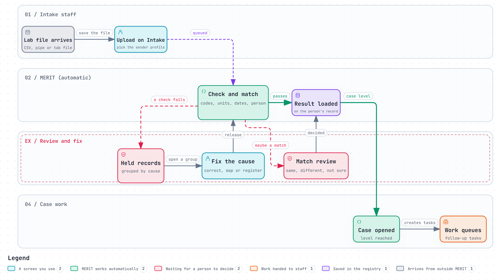
docs/daily-intake_workflow.html.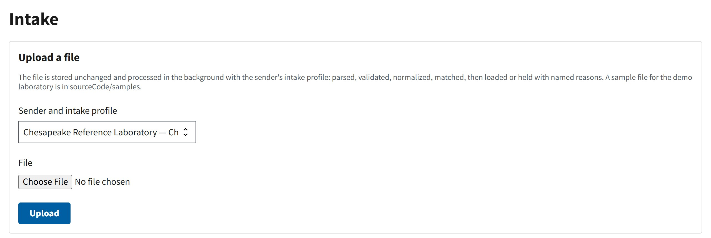
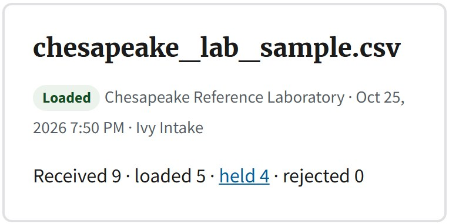
| The card says | What it means | What to do |
|---|---|---|
| Loaded | Every row was checked; good rows are on people's records | Clear any held rows (next section) |
| Processing | MERIT is still working | Wait; the card refreshes itself |
| Failed | The file could not be read (wrong format or sender) | Check you chose the right sender; ask the laboratory for a corrected file |
Who: anyone with the Release held results permission (intake clerks and supervisors).
A row is held when MERIT cannot load it safely. It waits with a named cause. Held records are grouped by cause, laboratory and reported value, so you fix a cause once and release every row it held. Groups with high results are marked urgent: work them first.
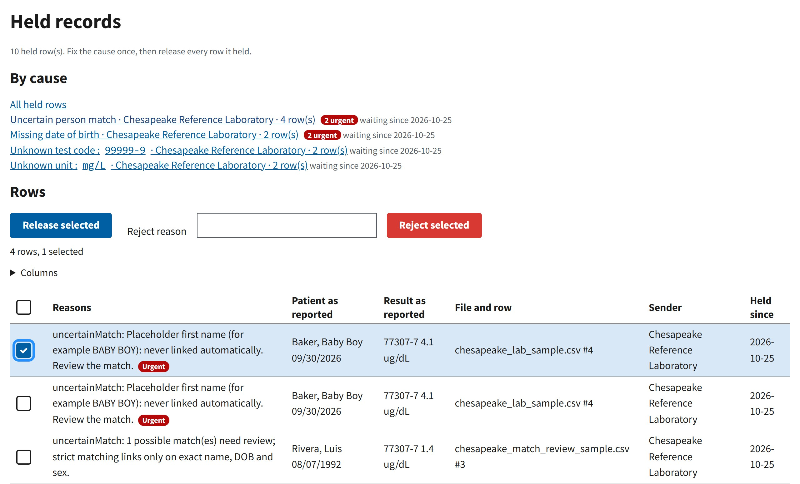
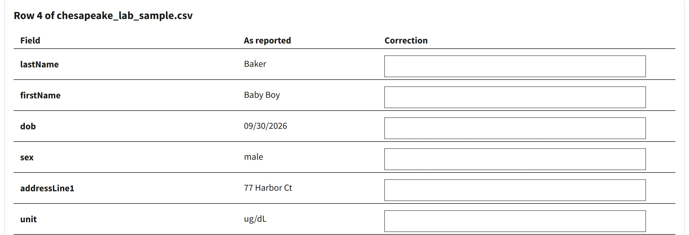
| Cause | Usual fix |
|---|---|
| Unknown sender | The laboratory's CLIA number is not in the registry. Add it on Reporters (section 6), then release. |
| Unknown test code | The LOINC code is not mapped to a metal. Ask your administrator to map it, or correct an obvious typo, then release. |
| Unknown unit | The unit is not accepted for this test (for example mg/L for blood lead). Confirm the right unit with the laboratory and correct it. |
| Missing date of birth / missing result value / impossible dates | Call the laboratory or the ordering provider; correct the field. |
| Uncertain person match | Decide it on Match review (next section). |
| Possible duplicate | Compare with the result already loaded; reject the duplicate with a reason. |
| Out of jurisdiction / unusable address | Check the address; correct it, or reject with a reason and forward the report as your program requires. |
MERIT links a result to a person automatically only when name, date of birth and sex agree exactly. When a record looks like someone already in MERIT but not exactly (a nickname, a swapped day and month, a hyphenated name, a possible twin), it waits for you on Match review. Placeholder names such as "Baby Boy" are never linked automatically.
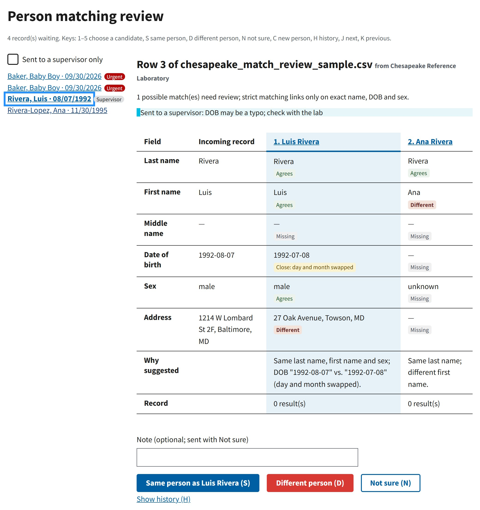
| Decision | Key | What happens |
|---|---|---|
| Same person as … | S (or 1–5 to pick a candidate) | The result is linked to that person |
| Different person | D | MERIT remembers the pair and will not suggest it again; with no candidate left, the record loads as a new person |
| Not sure | N | Sent to a supervisor, with your optional note |
| Create as a new person | C | A new person record is created |
| History / next / previous | H J K | Show the candidate's history; move through the queue |
The Reporters screen is MERIT's list of who reports results: laboratories (identified by their CLIA number), facilities that order tests such as clinics and hospitals (by NPI or CLIA number), and individual providers (by NPI). Intake uses it to link each result to its laboratory and ordering provider. A result from a laboratory that is not on the list is held as unknown sender.
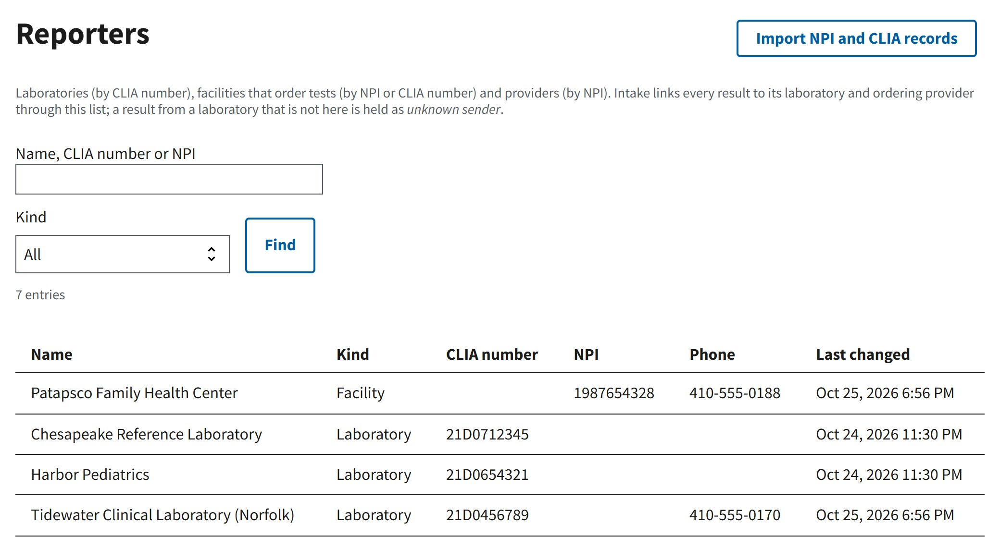
For fax and paper reports, phone calls, and records from other programs. Who: anyone with Edit people and Enter results.
Use the header search with the person's name and date of birth. MERIT keeps one record per person; a duplicate splits their history and can hide a case. Open the person if they are already there.
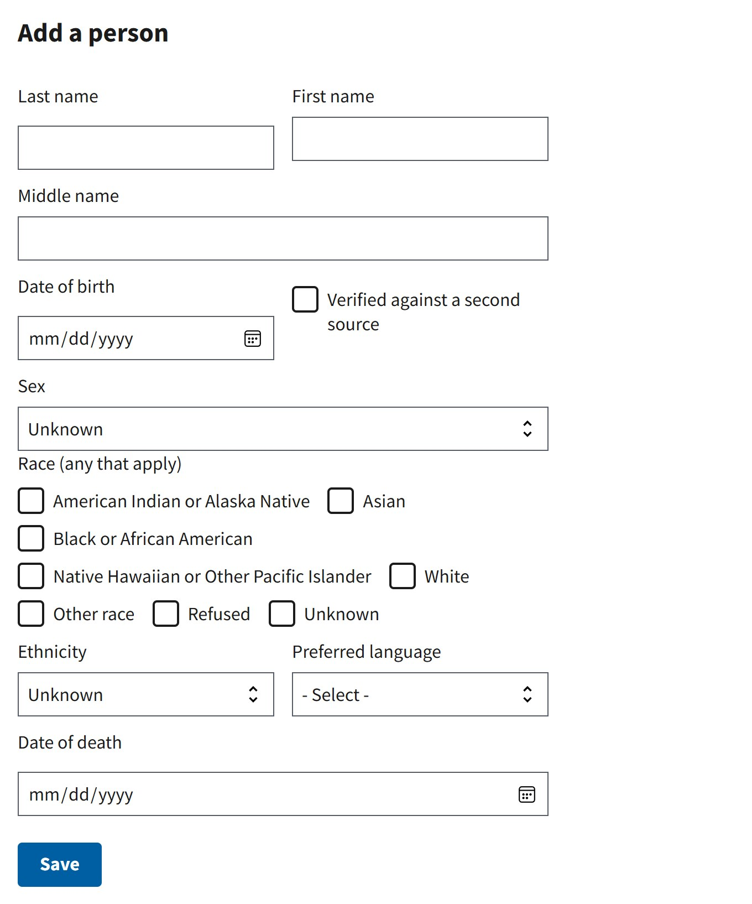
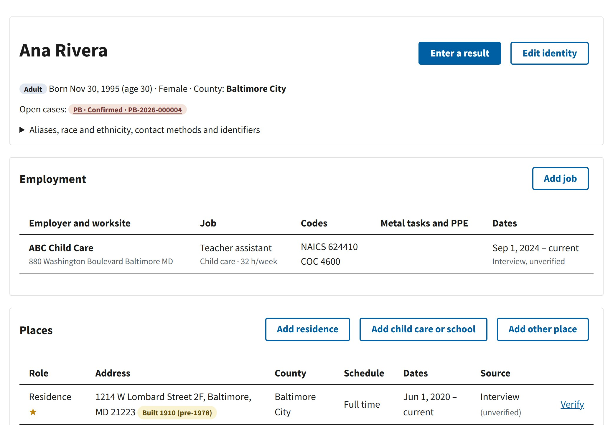
< or > for a detection limit: 4.2, <1.0, >65.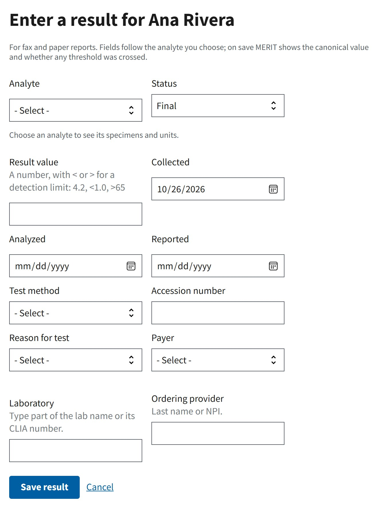
Each is a section of the person page with its own Add button. Every entry records its source (interview, laboratory report, and so on) and dates, so history is kept rather than overwritten.
| Section | Buttons | Good to know |
|---|---|---|
| Places | Add residence · Add child care or school · Add other place · Set as primary · Verify · End | Enter the street address, city, state and ZIP; MERIT finds the county. For a new residence choose whether it becomes primary from its start date or the current primary stays primary; overlapping residences need a reason. Add the year built for housing-age risk. For child care and other places, give the schedule (hours per week) so MERIT can tell when a site investigation is needed. |
| Relationships | Add relationship · End | Search for the other person or enter their name and date of birth, then choose what they are to this person (parent, guardian, sibling, household member…). Mark the primary contact and who has legal custody. Household children and pregnant members of an adult case get testing recommendations automatically. |
| Employment | Add job | Employer and worksite, job title, industry and occupation codes, hours, metal tasks and protective equipment. Needed for adult cases and the ABLES file. |
| Exposure sources | Add source | Source type, since when, and a description (product, brand, country of origin). Tick Confirmed by a sample after an environmental sample confirms it. |
| Pregnancies | Add episode | Start date and expected end. While an episode is open, results count in the pregnant population and prenatal notifications are created. |
| Timeline | Open the interactive timeline | Every result, case, place and job on one time line. |
MERIT opens a case automatically when a result reaches the case level for the person's population (child, adult, pregnant). The case collects the results, tasks, activity and investigations for that exposure.
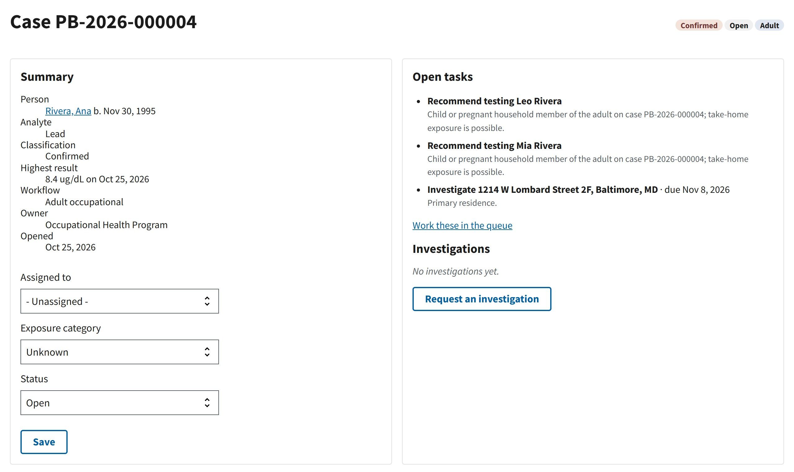
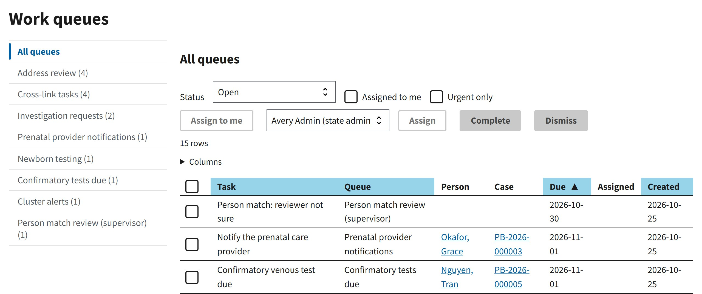
| Queue | What it asks you to do |
|---|---|
| Confirmatory tests due | A capillary result needs a venous test: contact the family or provider |
| Address review | A laboratory report gave a new address: decide whether the person moved |
| Investigation requests | Schedule the requested home, child-care or workplace investigation |
| Prenatal provider notifications / Newborn testing | Notify the prenatal care provider; make sure the newborn is tested |
| Cross-link tasks | Recommend testing for household members of a case |
| Cluster alerts | Several cases share a building, child-care site or worksite: review the cluster |
| Person match review (supervisor) | A reviewer was not sure; decide on Match review |
Tick one or more tasks, then Assign to me, choose a person and Assign, Complete, or Dismiss a task that no longer applies. Change Status to see done and dismissed tasks.
Who: investigators and occupational investigators; supervisors.
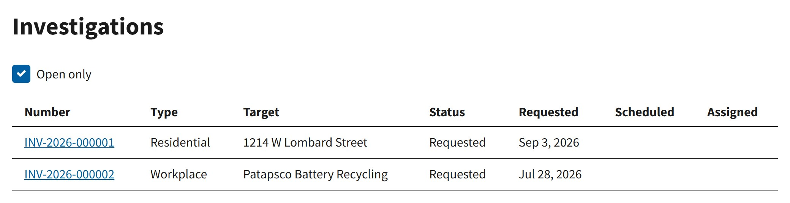
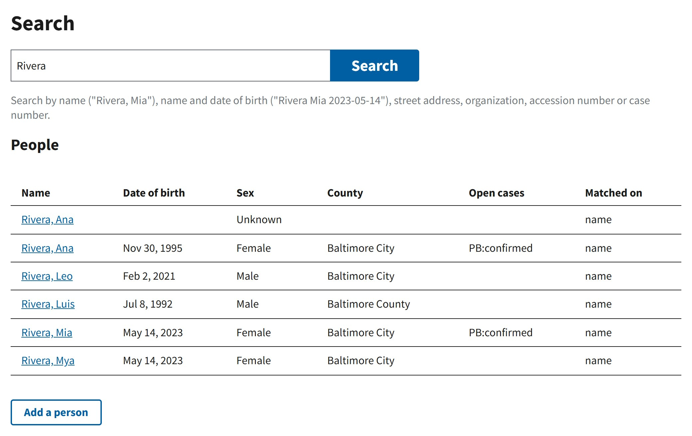
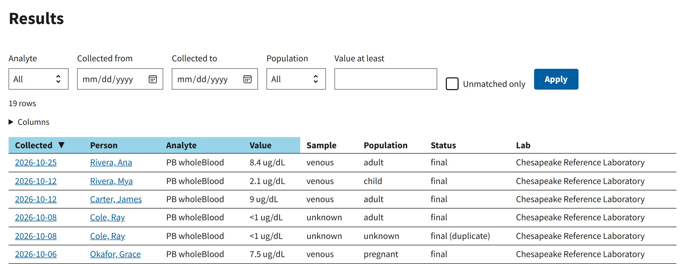
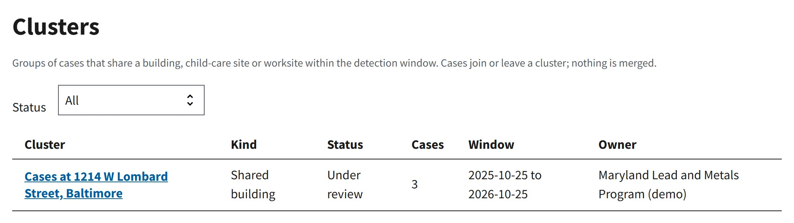
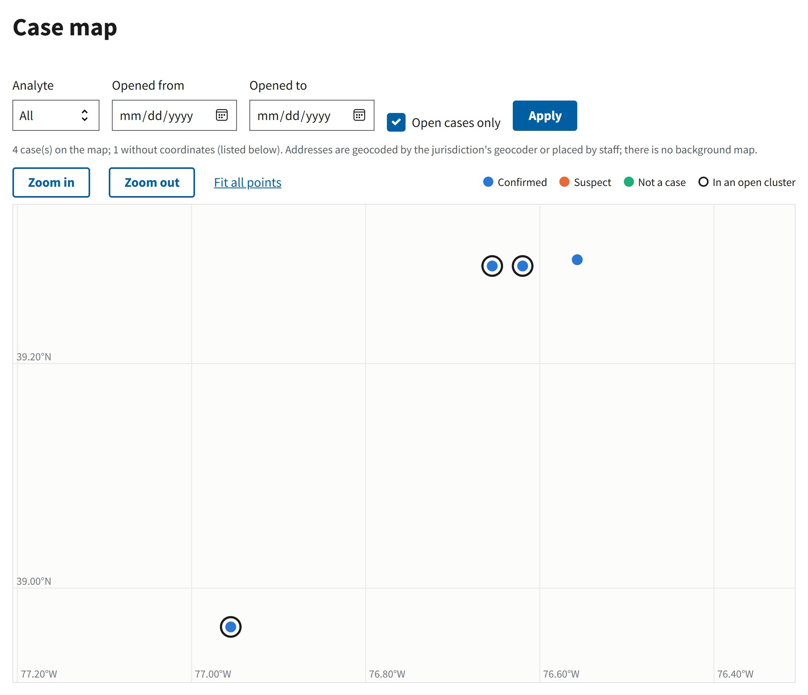
Choose a report on the left, set From, To and the analyte, click Apply, and use Export CSV or Export Excel to share it. Exports are recorded in the audit log.
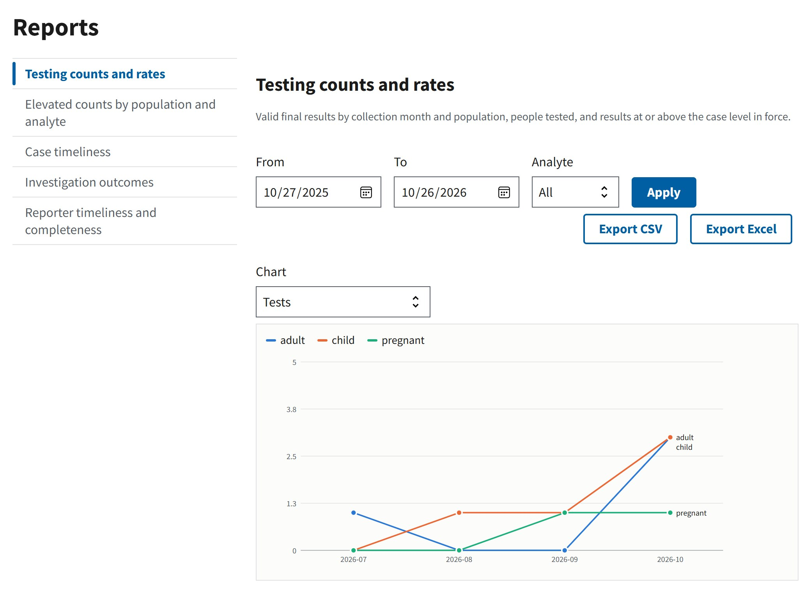
| Report | Use it to |
|---|---|
| Testing counts and rates | See tests, people tested and results at or above the case level by month and population |
| Elevated counts by population and analyte | Track elevated results for partners and grant reports |
| Case timeliness | Check how quickly cases are opened, contacted and investigated |
| Investigation outcomes | Summarize findings, sources and orders |
| Reporter timeliness and completeness | Find laboratories that report late or leave fields blank, and follow up with them |
Who: Generate federal extracts (supervisors, epidemiologists); Mark extracts submitted (supervisors).
CBLS is CDC's Childhood Blood Lead Surveillance file, sent every quarter. ABLES is NIOSH's Adult Blood Lead Epidemiology and Surveillance file, sent once a year. Both are built from the results already in MERIT; you do not re-enter anything. The files carry a stable surrogate id, date of birth, county and the fields each layout needs, never names, street addresses, phone numbers or record numbers.
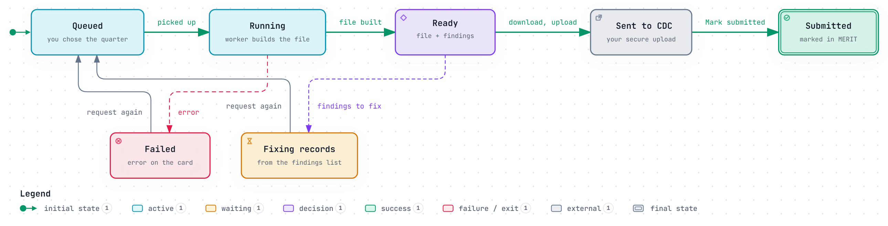
docs/cbls-extract_lifecycle.html.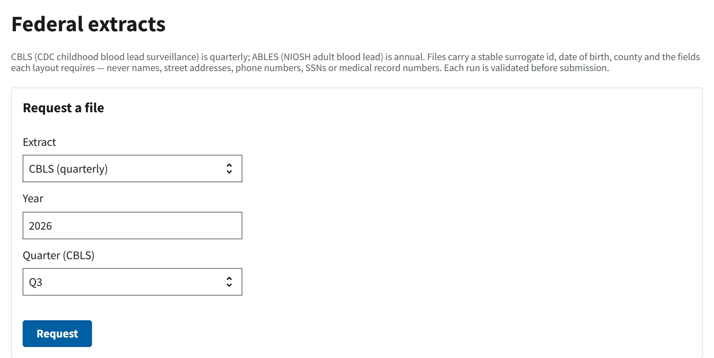
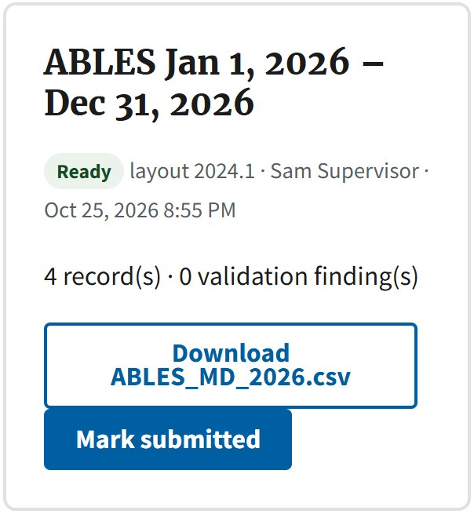
The same steps, with Extract = ABLES (annual) and the year. ABLES uses each adult's employment (industry and occupation codes) and exposure sources, so check the Employment section of adult cases during the year.
Configuration holds the thresholds (case and action levels for each metal, specimen and population, with the date each takes effect), the jurisdiction settings (for example the investigation look-back, contact attempts before a letter, cluster window and size) and the analytes in use. A new value takes effect from its date; old values are kept for history. Review them once a year and whenever guidance changes.
On Users, add people, set where they work, and give them roles at a tenant. The companion guide Who sees what, and your profiles explains roles, master profiles and viewing as someone.
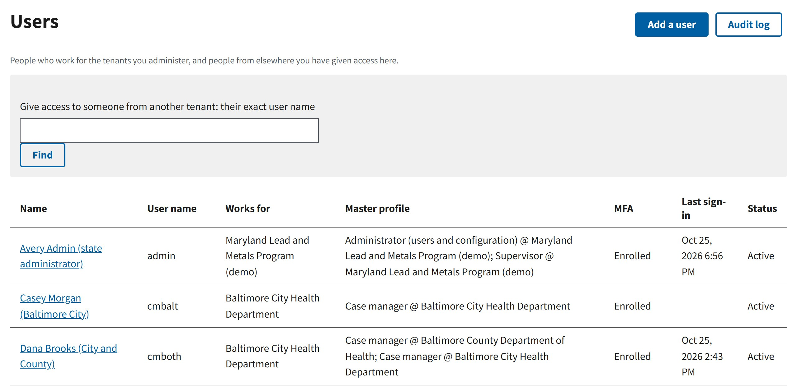
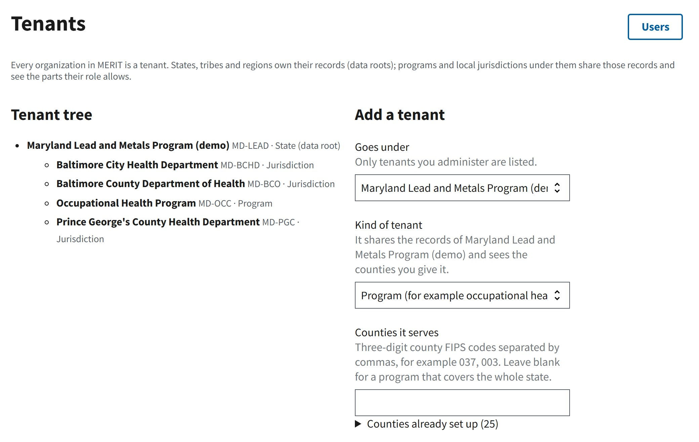
WV-JEFFERSON; it cannot be changed) and a Name.037, 003). Counties not yet in MERIT go in New counties, one per line: 037 Jefferson County. For a new state or tribe, give its two-letter postal code and state FIPS code.The usual roles. Your administrator may give you more than one, and your profile may use only part of what you have.
| Role | Main screens | Typical work |
|---|---|---|
| Intake clerk | Intake, Held records, Match review, Reporters, people and results | Load files, clear holds, enter fax and paper reports, keep the reporter registry current |
| Case manager | Cases, Work queues, people, Reports (export) | Follow up cases, contact families and providers, request investigations |
| Investigator / occupational investigator | Investigations, Cases, people | Home, child-care and workplace investigations, samples, findings |
| Supervisor | Everything above, Extracts, audit log | Escalated matches, overrides, reassignments, federal extracts and their submission |
| Epidemiologist (de-identified) | Results, Cases, Clusters, Map, Reports, Extracts | Analysis and reports without names; can generate extracts |
| Administrator | Configuration, Users, Tenants, Reporters, audit log | Thresholds and settings, accounts and access, new counties and programs |
| User administrator | Users, audit log | Accounts and access only, for example at one county |
My file shows "held 12". Did I do something wrong?
No. Held rows are MERIT protecting the registry. Open the held link on the batch card, fix each cause once, and release.
A whole file is held as unknown sender.
The laboratory's CLIA number is not in the reporter registry. Add the laboratory on Reporters, then release the rows.
I entered a person and then found they already existed.
Stop adding information to the new record and tell your supervisor, who arranges for the two records to be combined. A combined record is marked read-only with a link to the surviving record, so no history is lost.
Can I change a result a laboratory reported?
No. Reported values are kept as sent. Corrections come from the laboratory as a corrected result, or as a correction beside a held row before it is released.
The Extracts card says Ready but shows findings. Can I send it?
Findings are warnings. Fix what you can and request the file again; your program decides whether to send a file that still has findings.
I marked an extract submitted by mistake.
The file is unchanged and can still be downloaded. Ask your administrator if the status needs correcting.
A menu item a colleague has is missing for me.
Your role or profile does not include it. Check the profile in the header, then ask your administrator.
MERIT user guide: daily, weekly and quarterly work. Screens are from the demonstration site; people and data are made up.